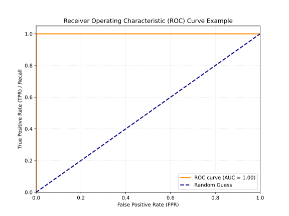
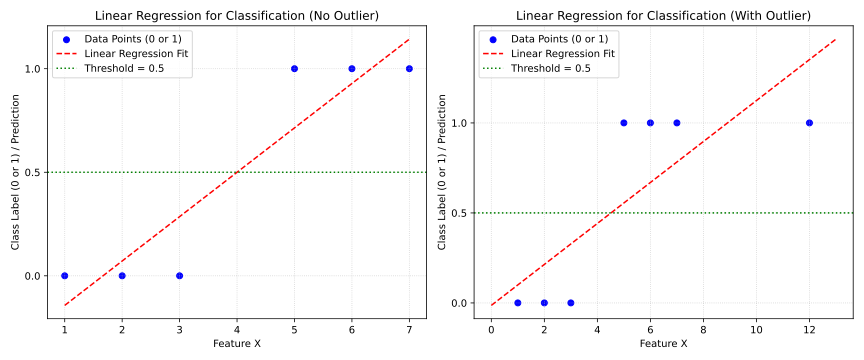
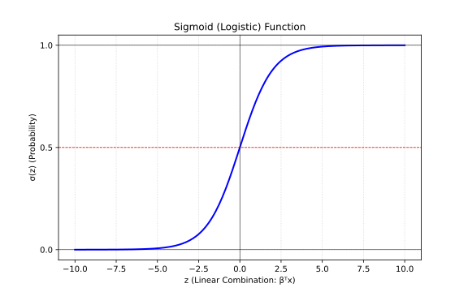
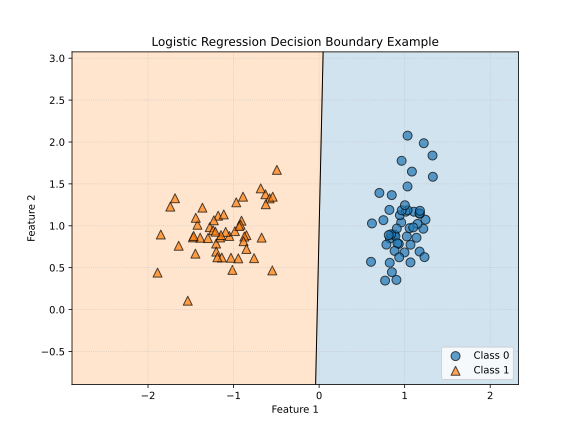
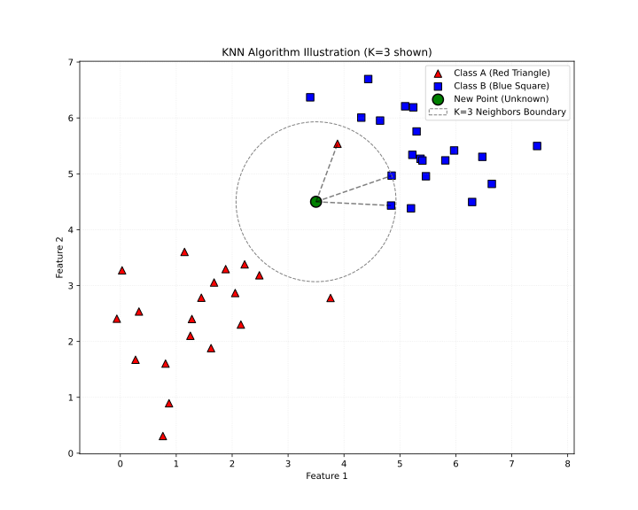
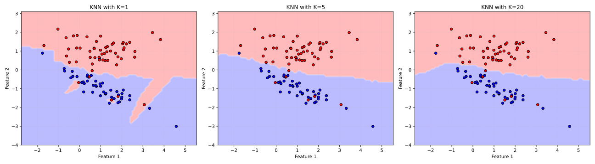

学习目标
学习目标：
理解分类问题的定义及其与回归问题的区别。
掌握逻辑回归的原理，包括Sigmoid函数、决策边界和代价函数。
理解K近邻（KNN）算法的核心思想、距离度量方法和K值选择的重要性。
了解特征缩放对于距离敏感算法（如KNN）的必要性。
能够使用Scikit-learn库实现、训练和评估逻辑回归和KNN分类模型。
能够对逻辑回归和KNN模型进行基本的参数调整和结果比较。
4.1 什么是分类问题？
在机器学习中，分类 (Classification) 是一种监督学习任务，其目标是预测一个离散的类别标签 (discrete class label) 。换句话说，我们希望将输入数据点分配到一个预定义的类别中。
例如：
判断一封邮件是否为垃圾邮件（类别：“垃圾邮件” 或 “非垃圾邮件”）。
识别一张图片中的动物是猫还是狗（类别：“猫” 或 “狗”）。
根据客户的特征判断其信用等级（类别：“高信用”, “中等信用”, “低信用”）。
识别手写数字（类别：“0”, “1”, “2”, …, “9”）。
分类的核心 是找到输入特征 （自变量）与类别标签 （因变量）之间的映射关系。我们希望建立一个模型，当给定新的输入特征时，该模型能够给出正确的类别预测。
4.1.1 分类与回归的关键区别
我们在上一章学习了回归问题，其目标是预测连续值。分类与回归的主要区别总结如下：
输出类型 连续数值 (e.g., 1.23, 100, -5.7)
离散类别 (e.g., “A”, “B”, “C”, True/False, 0, 1)
目标 预测一个具体的量
将输入划分到预定义的类别中
示例 房价预测, 气温预测, 股票价格预测
邮件分类, 图像识别, 疾病诊断
评估指标 均方误差 (MSE), R², 平均绝对误差 (MAE)
准确率, 精确率, 召回率, F1分数, ROC曲线, AUC
4.1.2 常见的分类类型
二分类 (Binary Classification): 只有两个可能的输出类别。例如：是/否，垃圾/非垃圾，通过/未通过。多分类 (Multiclass Classification): 有三个或更多可能的输出类别，且每个样本只能属于一个类别。例如：手写数字识别（0-9），新闻主题分类（体育、财经、娱乐）。多标签分类 (Multilabel Classification): 每个样本可以同时属于多个类别。例如：一部电影可以同时被标记为”动作片”、“科幻片”和”冒险片”。
本章将主要关注二分类和多分类问题。
4.1.3 分类模型的评估指标
一旦我们训练好一个分类模型，就需要评估其性能。与回归模型使用MSE、R²等指标不同，分类模型有其特定的一套评估指标。这些指标通常基于混淆矩阵 (Confusion Matrix) 计算得出。
4.1.3.1 混淆矩阵 (Confusion Matrix)
对于一个二分类问题（假设类别为正类1和负类0），混淆矩阵是一个2x2的表格，总结了模型预测结果与真实标签之间的关系：
实际为正类 (Actual: 1) 真正例 (True Positive, TP)
假反例 (False Negative, FN)
实际为负类 (Actual: 0) 假正例 (False Positive, FP)
真反例 (True Negative, TN)
真正例 (TP): 实际为正类，模型也预测为正类。真反例 (TN): 实际为负类，模型也预测为负类。假正例 (FP): 实际为负类，但模型错误地预测为正类 (也称为 Type I error)。假反例 (FN): 实际为正类，但模型错误地预测为负类 (也称为 Type II error)。
对于多分类问题，混淆矩阵会扩展为 NxN 的表格，其中N是类别的数量。
4.1.3.2 准确率 (Accuracy)
准确率是最直观的评估指标，表示模型正确预测的样本占总样本的比例。
\[ \text{Accuracy} = \frac{TP + TN}{TP + TN + FP + FN} = \frac{\text{正确预测的样本数}}{\text{总样本数}} \]
优点： 简单易懂。
缺点： 在类别不平衡的数据集上具有误导性。例如，如果95%的样本属于负类，一个总是预测负类的模型也能达到95%的准确率，但这并不是一个好模型。
4.1.3.3 精准率 (Precision)
精准率（也称查准率）衡量的是在所有被模型预测为正类的样本中，有多少是真正的正类。
\[ \text{Precision} = \frac{TP}{TP + FP} = \frac{\text{真正例}}{\text{所有预测为正例的样本数}} \]
关注点： 预测为正的样本中，有多少是“名副其实”的。常用于希望避免“误报”的场景，例如垃圾邮件检测（不希望将正常邮件误判为垃圾邮件）。
4.1.3.4 召回率 (Recall)
召回率（也称查全率、敏感度 (Sensitivity)）衡量的是在所有实际为正类的样本中，有多少被模型成功预测出来。
\[ \text{Recall} = \frac{TP}{TP + FN} = \frac{\text{真正例}}{\text{所有实际为正例的样本数}} \]
关注点： 真正为正的样本中，有多少被“找回来”了。常用于希望避免“漏报”的场景，例如疾病诊断（不希望漏掉任何一个真正的病人）。
精准率与召回率的权衡 (Precision-Recall Trade-off): 通常情况下，精准率和召回率是相互制约的。提高一个往往会导致另一个下降。例如，如果我们希望召回所有病人（提高召回率），可能会将一些健康人也误诊为病人（降低精准率）。选择合适的阈值来平衡两者非常重要。
4.1.3.5 F1 分数 (F1-Score)
F1分数是精准率和召回率的调和平均值，它综合考虑了这两个指标。
\[ F1 = 2 \cdot \frac{\text{Precision} \cdot \text{Recall}}{\text{Precision} + \text{Recall}} \]
特点： 当精准率和召回率都较高时，F1分数也会较高。它比简单平均更偏向于较小的值，因此只有当两者都较好时，F1才会高。
4.1.3.6 ROC 曲线与 AUC
ROC (Receiver Operating Characteristic) 曲线 是另一种评估二分类模型性能的强大工具，尤其适用于类别不平衡的情况。ROC曲线通过绘制不同分类阈值下的真正例率 (True Positive Rate, TPR) 与 假正例率 (False Positive Rate, FPR) 的关系来展示模型的性能。
真正例率 (TPR): 就是召回率。 \[ TPR = \text{Recall} = \frac{TP}{TP + FN} \] 假正例率 (FPR): 实际为负类的样本中，被错误预测为正类的比例。 \[ FPR = \frac{FP}{FP + TN} \]
ROC曲线的横轴是FPR，纵轴是TPR。
一个完美的分类器，其ROC曲线会经过左上角 (FPR=0, TPR=1)。
随机猜测的分类器，其ROC曲线是一条从 (0,0) 到 (1,1) 的对角线。
曲线越靠近左上角，模型的性能越好。
AUC (Area Under the ROC Curve): ROC曲线下的面积。AUC值介于0到1之间。
AUC = 1：完美分类器。
AUC = 0.5：随机猜测。
AUC < 0.5：比随机猜测还差（通常意味着标签可能反了）。
AUC提供了一个单一的数值来总结模型在所有可能阈值下的性能。
 (图 4.1: ROC曲线示例。曲线越靠近左上角，模型性能越好。对角线代表随机猜测。AUC即曲线下面积。)
选择哪种评估指标取决于具体的应用场景和我们更关注哪方面的性能（例如，是最小化假正例还是最小化假反例）。通常我们会综合考虑多个指标。
4.2 逻辑回归 (Logistic Regression)
虽然名字中带有”回归”，但逻辑回归实际上是一种广泛用于解决二分类问题 的线性模型。它通过一个特殊的函数（Sigmoid或Logistic函数）将线性回归的输出映射到 (0, 1) 区间，从而得到样本属于某个类别的概率。
4.2.1 为什么不用线性回归做分类？
直接使用线性回归进行分类存在一些问题：
输出范围不匹配： 线性回归的输出是连续的，可以超出 [0, 1] 的范围，而概率值必须在 [0, 1] 之内。对异常值敏感： 如下图所示，如果使用线性回归拟合0/1的分类标签，少数几个离群点就可能显著改变决策边界。
 (图 4.2: 线性回归用于分类的问题。左图：一个看似合理的阈值可以将两类分开。右图：增加一个离群点后，线性回归的拟合线发生显著改变，导致原阈值不再适用。)
为了解决这些问题，逻辑回归引入了Sigmoid函数。
4.2.2 Sigmoid (Logistic) 函数
Sigmoid函数，也称为Logistic函数，其数学表达式为： \[ \sigma(z) = \frac{1}{1 + e^{-z}} \] 其中 \(z\) 是线性组合，即 \(z = \beta_0 + \beta_1 x_1 + \beta_2 x_2 + ... + \beta_p x_p = \mathbf{\beta}^T \mathbf{x}\) (这里 \(\mathbf{x}\) 包含了 \(x_0=1\) 的截距项)。
Sigmoid函数的特点：
输出值域为 (0, 1)，正好可以解释为概率。
当 \(z \to \infty\) 时，\(\sigma(z) \to 1\) 。
当 \(z \to -\infty\) 时，\(\sigma(z) \to 0\) 。
当 \(z = 0\) 时，\(\sigma(z) = 0.5\) 。
它是一个单调递增的S型曲线。
 (图 4.3: Sigmoid (Logistic) 函数图像。它将任意实数输入映射到 (0, 1) 区间。)
4.2.3 模型表示与决策边界
逻辑回归模型预测样本属于正类（通常记为类别1）的概率为： \[ P(y=1 | \mathbf{x}; \mathbf{\beta}) = h_{\mathbf{\beta}}(\mathbf{x}) = \sigma(\mathbf{\beta}^T \mathbf{x}) = \frac{1}{1 + e^{-\mathbf{\beta}^T \mathbf{x}}} \] 相应地，样本属于负类（通常记为类别0）的概率为： \[ P(y=0 | \mathbf{x}; \mathbf{\beta}) = 1 - h_{\mathbf{\beta}}(\mathbf{x}) \]
决策边界 (Decision Boundary): 为了做出明确的分类预测，我们需要设定一个阈值，通常为0.5。
如果 \(h_{\mathbf{\beta}}(\mathbf{x}) \ge 0.5\) ，则预测 \(y=1\) 。
如果 \(h_{\mathbf{\beta}}(\mathbf{x}) < 0.5\) ，则预测 \(y=0\) 。
由于Sigmoid函数在 \(z=0\) 时取值为0.5，所以决策边界对应于 \(\mathbf{\beta}^T \mathbf{x} = 0\) 。 对于线性组合 \(\mathbf{\beta}^T \mathbf{x} = \beta_0 + \beta_1 x_1 + \beta_2 x_2 + ...\) ，决策边界是一个线性 边界。 例如，在二维空间 (两个特征 \(x_1, x_2\) )，决策边界是一条直线：\(\beta_0 + \beta_1 x_1 + \beta_2 x_2 = 0\) 。 在三维空间，它是一个平面；更高维则是一个超平面。
 (图 4.4: 逻辑回归的线性决策边界示例 (二维特征空间)。橙色三角和蓝色圆点代表两个类别，黑线是学习到的决策边界。)
非线性决策边界： 虽然逻辑回归本身是线性分类器，但可以通过引入多项式特征（类似于多项式回归）或使用核技巧（不在此处详述）来创建非线性的决策边界。
4.2.4 代价函数 (Cost Function)
对于线性回归，我们使用均方误差 (MSE) 作为代价函数。但如果将MSE直接用于逻辑回归（即 \(J(\mathbf{\beta}) = \frac{1}{m} \sum (h_{\mathbf{\beta}}(\mathbf{x}^{(i)}) - y^{(i)})^2\) ），由于 \(h_{\mathbf{\beta}}(\mathbf{x})\) 是非线性的Sigmoid函数，代价函数会变成一个非凸函数 (non-convex function) ，有很多局部最优解，梯度下降法难以找到全局最优。
因此，逻辑回归使用一个不同的代价函数，称为对数损失 (Log Loss) 或二元交叉熵 (Binary Cross-Entropy) 。 对于单个训练样本 \((\mathbf{x}, y)\) ，其代价为： \[ Cost(h_{\mathbf{\beta}}(\mathbf{x}), y) = -y \log(h_{\mathbf{\beta}}(\mathbf{x})) - (1-y) \log(1 - h_{\mathbf{\beta}}(\mathbf{x})) \]
这个代价函数的特点是：
如果 \(y=1\) 且 \(h_{\mathbf{\beta}}(\mathbf{x}) \to 1\) (预测正确)，则 \(Cost \to 0\) 。
如果 \(y=1\) 且 \(h_{\mathbf{\beta}}(\mathbf{x}) \to 0\) (预测错误)，则 \(Cost \to \infty\) (给予大的惩罚)。
如果 \(y=0\) 且 \(h_{\mathbf{\beta}}(\mathbf{x}) \to 0\) (预测正确)，则 \(Cost \to 0\) 。
如果 \(y=0\) 且 \(h_{\mathbf{\beta}}(\mathbf{x}) \to 1\) (预测错误)，则 \(Cost \to \infty\) (给予大的惩罚)。
对于整个训练集（\(m\) 个样本），总的代价函数为： \[ J(\mathbf{\beta}) = -\frac{1}{m} \sum_{i=1}^{m} [y^{(i)} \log(h_{\mathbf{\beta}}(\mathbf{x}^{(i)})) + (1-y^{(i)}) \log(1 - h_{\mathbf{\beta}}(\mathbf{x}^{(i)}))] \] 这个代价函数是凸函数，可以使用梯度下降等优化算法找到全局最优解。
为什么MSE直接作用是非凸的，而对数损失是凸的？
MSE的非凸性 ：
逻辑回归的预测函数是Sigmoid函数 \(h_{\beta}(x) = \frac{1}{1+e^{-\beta^T x}}\) ，这是一个非线性变换
当MSE作用在这个非线性输出上时，代价函数 \(J(\beta) = \frac{1}{m}\sum (h_{\beta}(x^{(i)})-y^{(i)})^2\) 会形成多个局部极小值
这种非凸性使得梯度下降容易陷入局部最优而无法找到全局最优解
对数损失的凸性 ：
对数损失函数 \(J(\beta) = -\frac{1}{m}\sum [y^{(i)}\log(h_{\beta}(x^{(i)})) + (1-y^{(i)})\log(1-h_{\beta}(x^{(i)}))]\) 经过精心设计
可以证明这个函数关于参数 \(\beta\) 是凸的（二阶导数始终非负）
凸函数保证梯度下降一定能收敛到全局最小值
这个设计还符合最大似然估计的原理，使预测概率与真实标签的差异最小化
数学证明参考 ：
4.2.5 优化：梯度下降
逻辑回归的参数 \(\mathbf{\beta}\) 可以通过梯度下降法来优化。梯度下降的更新规则与线性回归类似： \[ \beta_j := \beta_j - \alpha \frac{\partial J(\mathbf{\beta})}{\partial \beta_j} \] 对于逻辑回归的代价函数，其偏导数为： \[ \frac{\partial J(\mathbf{\beta})}{\partial \beta_j} = \frac{1}{m} \sum_{i=1}^{m} (h_{\mathbf{\beta}}(\mathbf{x}^{(i)}) - y^{(i)}) x_j^{(i)} \] 这个偏导数的形式与线性回归的梯度在形式上是相同的（尽管 \(h_{\mathbf{\beta}}(\mathbf{x})\) 的定义不同）。
与线性回归一样，逻辑回归也可以添加L1或L2正则化项来防止过拟合。Scikit-learn中的 LogisticRegression 类默认就包含了L2正则化。
4.2.6 多分类逻辑回归 (Softmax Regression)
对于多分类问题（K个类别，K > 2），逻辑回归可以推广为Softmax Regression (或称 Multinomial Logistic Regression)。 Softmax函数将一个K维向量 \(z\) 转换为一个K维的概率分布向量 \(p\) ，其中每个元素 \(p_k\) 表示样本属于类别 \(k\) 的概率，且所有概率之和为1。 \[ p_k = \text{softmax}(z)_k = \frac{e^{z_k}}{\sum_{j=1}^{K} e^{z_j}} \] 其中 \(z_k = \mathbf{\beta}_k^T \mathbf{x}\) 是类别 \(k\) 的线性得分。每个类别都有一组自己的参数 \(\mathbf{\beta}_k\) 。 代价函数也相应地推广为交叉熵损失。
另一种处理多分类的方法是One-vs-Rest (OvR) 或 One-vs-All (OvA) 。对于K个类别，我们训练K个独立的二分类逻辑回归模型。第 \(k\) 个模型将类别 \(k\) 视为正类，所有其他类别视为负类。预测时，选择概率最高的那个模型对应的类别。Scikit-learn中的 LogisticRegression 支持OvR和Softmax (multinomial) 策略。
4.2.7 逻辑回归的优缺点
优点：
实现简单，计算代价不高，训练速度快。
输出结果易于理解，可以解释为概率。
对数据中小噪声的鲁棒性好。
由于是线性模型，可解释性较强。
易于通过正则化来防止过拟合。
缺点：
容易欠拟合，因为它假设数据是线性可分的（或通过特征工程变为线性可分）。
对于非线性关系复杂的数据集，表现可能不佳。
对特征空间较大时，性能可能下降。
4.3 K-近邻算法 (K-Nearest Neighbors, KNN)
K-近邻算法是一种简单且直观的非参数 (non-parametric) 分类（和回归）算法。它不做任何关于数据分布的假设。
核心思想： “物以类聚，人以群分”。一个样本的类别由其在特征空间中最邻近的 K 个样本的类别来决定。
4.3.1 KNN算法步骤
选择参数 K： 确定邻居的数量 K，K通常是一个小的正整数。计算距离： 对于一个新的未知样本，计算它与训练集中所有样本之间的距离。找到K个最近邻： 根据计算出的距离，找出训练集中距离新样本最近的 K 个样本。进行预测：
分类任务： K 个最近邻中出现次数最多的类别（多数表决）即为新样本的预测类别。可以对不同距离的邻居赋予不同的权重（例如，距离越近权重越大）。回归任务： K 个最近邻的目标值的平均值（或加权平均值）即为新样本的预测值。
 (图 4.5: KNN算法原理图示。绿色圆圈为未知样本。如果K=3，其最近的3个邻居（虚线连接）决定其类别。图中K=3时，最近的邻居中有2个红色三角，1个蓝色方块，因此新样本会被预测为红色三角。如果K=5，则会考虑5个最近邻居，预测结果可能不同。)
4.3.2 距离度量 (Distance Metrics)
选择合适的距离度量方法对KNN的性能至关重要。常用的距离度量包括：
欧几里得距离 (Euclidean Distance): 最常用的距离度量。对于两个 \(n\) 维向量 \(\mathbf{a}=(a_1, ..., a_n)\) 和 \(\mathbf{b}=(b_1, ..., b_n)\) ，其欧氏距离为： \[ d(\mathbf{a}, \mathbf{b}) = \sqrt{\sum_{i=1}^{n} (a_i - b_i)^2} \] 曼哈顿距离 (Manhattan Distance): 也称为城市街区距离。 \[ d(\mathbf{a}, \mathbf{b}) = \sum_{i=1}^{n} |a_i - b_i| \] 闵可夫斯基距离 (Minkowski Distance): 是欧氏距离和曼哈顿距离的推广。参数 \(p \ge 1\) 。 \[ d(\mathbf{a}, \mathbf{b}) = (\sum_{i=1}^{n} |a_i - b_i|^p)^{1/p} \]
当 \(p=1\) 时，为曼哈顿距离。
当 \(p=2\) 时，为欧几里得距离。
切比雪夫距离 (Chebyshev Distance): \[ d(\mathbf{a}, \mathbf{b}) = \max_i (|a_i - b_i|) \] 余弦相似度 (Cosine Similarity) / 余弦距离 (Cosine Distance): 常用于文本数据。衡量两个向量方向的相似性。余弦距离 = 1 - 余弦相似度。 \[ \text{similarity}(\mathbf{a}, \mathbf{b}) = \frac{\mathbf{a} \cdot \mathbf{b}}{||\mathbf{a}|| \cdot ||\mathbf{b}||} \] 汉明距离 (Hamming Distance): 常用于二元或类别特征。表示两个等长字符串之间不同位置的字符个数。
Scikit-learn中的 KNeighborsClassifier 默认使用闵可夫斯基距离且 \(p=2\) （即欧氏距离）。
4.3.3 K值的选择
K值的选择对KNN模型的性能有很大影响：
较小的K值：
模型对噪声数据更敏感，容易受到异常点的影响。
决策边界会变得更复杂，波动更大。
可能导致过拟合 (low bias, high variance)。
较大的K值：
模型对噪声数据更不敏感，具有平滑效果。
决策边界会变得更平滑。
可能导致欠拟合 (high bias, low variance)，因为会包含较远的不太相似的点。
如何选择K值？
通常K取奇数，以避免投票时出现平局（主要针对二分类）。
交叉验证 (Cross-Validation): 最常用的方法。尝试不同的K值，选择在验证集上表现最好的那个K。经验法则： \(K \approx \sqrt{N}\) ，其中N是训练样本数量（这只是一个非常粗略的启发式方法）。可视化错误率 vs K值曲线： 绘制不同K值下的模型错误率（或准确率），寻找”肘部”或者错误率最低的点。
 (图 4.6: K值对KNN决策边界的影响。较小的K值（如K=1）产生复杂的边界，容易过拟合。较大的K值（如K=20）产生较平滑的边界，可能欠拟合。)
4.3.4 特征缩放 (Feature Scaling)
由于KNN是基于距离的算法，如果不同特征的取值范围（尺度）差异很大，那么尺度较大的特征会在距离计算中占据主导地位，而尺度较小的特征可能几乎不起作用。
例如，一个特征的范围是 0-1，另一个特征的范围是 0-1000。在计算欧氏距离时，第二个特征的差异会被放大。
因此，在使用KNN之前，对特征进行标准化 (Standardization) 或归一化 (Normalization) 通常是至关重要的步骤。
标准化 (Z-score normalization): 将特征缩放到均值为0，标准差为1。 \[ x' = \frac{x - \mu}{\sigma} \] 归一化 (Min-Max scaling): 将特征缩放到一个特定的范围，通常是 [0, 1] 或 [-1, 1]。 \[ x' = \frac{x - \min(x)}{\max(x) - \min(x)} \]
4.3.5 KNN的优缺点
优点：
简单直观： 算法原理容易理解和实现。无需训练： KNN是一种”懒惰学习 (lazy learning)“算法，它不构建显式的模型，训练阶段仅仅是存储训练数据。预测阶段才进行计算。对数据分布没有假设： 作为非参数模型，它不要求数据符合特定分布。天然支持多分类： 直接通过多数表决即可。对异常点不敏感（当K较大时）： 少数异常点不太可能影响多数投票的结果。
缺点：
计算成本高： 预测阶段需要计算新样本与所有训练样本的距离，当训练集很大时，非常耗时。对K值敏感： K的选择直接影响模型性能。对特征尺度敏感： 需要进行特征缩放。“维度灾难”： 在高维空间中，所有点之间的距离趋向于变得一样远，使得”近邻”的概念变得不那么有意义。KNN在高维数据上性能通常会下降。样本不平衡问题： 如果某些类别的样本数量远多于其他类别，多数表决机制会偏向于这些多数类。需要存储所有训练数据： 内存开销大。
直观理解维度灾难
维度灾难 (Curse of Dimensionality) 是指在高维空间中出现的各种反直觉现象，这些现象会导致许多机器学习算法（特别是基于距离的算法如KNN）性能下降。我们可以通过一个简单的例子来理解：
高维空间中的距离趋同现象
空间稀疏性
体积集中在边缘
可视化对比
2D空间：数据点可以均匀分布在平面上
100D空间：数据点几乎都位于”壳层”上，中心区域几乎是空的
对KNN的影响 ：随着维度增加，分类准确率通常会先提高后下降，因为最初增加特征可以提供更多信息，但超过某个点后，噪声和距离趋同效应会主导结果。
4.4 使用 Scikit-learn 实现分类模型
下面我们将使用Scikit-learn库来演示逻辑回归和KNN的实现。我们将使用一个常见的分类数据集，例如鸢尾花 (Iris) 数据集或者一个合成的二分类数据集。为了更好地说明，我们先用一个简单的合成二分类数据集。
# 导入必要的库 import numpy as npimport pandas as pdimport matplotlib.pyplot as pltimport seaborn as snsfrom sklearn.model_selection import train_test_split, cross_val_score, GridSearchCVfrom sklearn.preprocessing import StandardScalerfrom sklearn.linear_model import LogisticRegressionfrom sklearn.neighbors import KNeighborsClassifierfrom sklearn.metrics import accuracy_score, confusion_matrix, classification_report, roc_curve, aucfrom sklearn.datasets import make_classification, load_irisfrom matplotlib.colors import ListedColormap# 设置绘图风格 'seaborn-v0_8-whitegrid' )"husl" )# 生成一个简单的二分类合成数据集 = make_classification(n_samples= 200 , n_features= 2 , n_redundant= 0 ,= 2 , random_state= 42 , n_clusters_per_class= 1 , flip_y= 0.1 )# 可视化数据 = (8 , 6 ))0 ], X_cls[:, 1 ], c= y_cls, cmap= ListedColormap(['#FF0000' , '#0000FF' ]), edgecolors= 'k' , s= 50 )'Synthetic Binary Classification Dataset' )'Feature 1' )'Feature 2' )# 划分训练集和测试集 = train_test_split(X_cls, y_cls, test_size= 0.3 , random_state= 42 , stratify= y_cls)print (f"训练集大小: X_train= { X_cls_train. shape} , y_train= { y_cls_train. shape} " )print (f"测试集大小: X_test= { X_cls_test. shape} , y_test= { y_cls_test. shape} " )# 特征缩放 (对于KNN尤其重要，逻辑回归有时也能从中受益) = StandardScaler()= scaler.fit_transform(X_cls_train)= scaler.transform(X_cls_test)
训练集大小: X_train=(140, 2), y_train=(140,)
测试集大小: X_test=(60, 2), y_test=(60,)
4.4.1 逻辑回归 (Scikit-learn)
# 创建逻辑回归模型实例 # C是正则化强度的倒数，较小的C表示更强的正则化 = LogisticRegression(C= 1.0 , solver= 'liblinear' , random_state= 42 )# 训练模型 (可以使用原始数据或缩放后的数据，对于liblinear solver，缩放影响不大，但对于其他solver如lbfgs可能重要) # 使用缩放数据 # 查看模型参数 print (f" \n 逻辑回归模型:" )print (f"截距 (beta_0): { log_reg_model. intercept_} " )print (f"系数 (beta_j): { log_reg_model. coef_} " )# 在测试集上进行预测 = log_reg_model.predict(X_cls_test_scaled)= log_reg_model.predict_proba(X_cls_test_scaled)[:, 1 ] # 获取正类的概率 # 评估模型 = accuracy_score(y_cls_test, y_pred_log_reg)print (f"准确率 (Accuracy): { accuracy_log_reg:.4f} " )print (" \n 混淆矩阵:" )print (confusion_matrix(y_cls_test, y_pred_log_reg))print (" \n 分类报告:" )print (classification_report(y_cls_test, y_pred_log_reg))# 绘制决策边界 (辅助函数) def plot_decision_boundary(X, y, model, scaler, title, ax):= scaler.transform(X) # 确保传入的是原始X = X[:, 0 ].min () - 0.5 , X[:, 0 ].max () + 0.5 = X[:, 1 ].min () - 0.5 , X[:, 1 ].max () + 0.5 = np.meshgrid(np.arange(x_min, x_max, 0.02 ),0.02 ))# 对网格点进行缩放后预测 = scaler.transform(np.c_[xx.ravel(), yy.ravel()])= model.predict(mesh_points_scaled)= Z.reshape(xx.shape)= ListedColormap(['#FFAAAA' , '#AAAAFF' ])= ListedColormap(['#FF0000' , '#0000FF' ])= cmap_light, alpha= 0.8 )0 ], X[:, 1 ], c= y, cmap= cmap_bold, edgecolor= 'k' , s= 30 )min (), xx.max ())min (), yy.max ())'Feature 1 (original scale)' )'Feature 2 (original scale)' )= plt.subplots(figsize= (8 , 6 ))'Logistic Regression Decision Boundary (Test Set)' , ax)
逻辑回归模型:
截距 (beta_0): [0.03182521]
系数 (beta_j): [[-0.1118213 1.25736399]]
准确率 (Accuracy): 0.9000
混淆矩阵:
[[26 4]
[ 2 28]]
分类报告:
precision recall f1-score support
0 0.93 0.87 0.90 30
1 0.88 0.93 0.90 30
accuracy 0.90 60
macro avg 0.90 0.90 0.90 60
weighted avg 0.90 0.90 0.90 60
4.4.2 K-近邻 (KNN) (Scikit-learn)
# 创建KNN分类器实例 # 先尝试一个常见的K值，例如 K=5 = KNeighborsClassifier(n_neighbors= 5 , weights= 'uniform' , metric= 'minkowski' , p= 2 ) # p=2 即欧氏距离 # 训练模型 (KNN的"训练"只是存储数据) # **务必使用缩放后的数据** # 在测试集上进行预测 = knn_model.predict(X_cls_test_scaled)= knn_model.predict_proba(X_cls_test_scaled)[:, 1 ] # 获取正类的概率 # 评估模型 = accuracy_score(y_cls_test, y_pred_knn)print (f" \n KNN模型 (K=5):" )print (f"准确率 (Accuracy): { accuracy_knn:.4f} " )print (" \n 混淆矩阵:" )print (confusion_matrix(y_cls_test, y_pred_knn))print (" \n 分类报告:" )print (classification_report(y_cls_test, y_pred_knn))= plt.subplots(figsize= (8 , 6 ))'KNN (K=5) Decision Boundary (Test Set)' , ax)# 使用交叉验证为KNN选择最优K值 = range (1 , 31 )= []for k_val in k_range:= KNeighborsClassifier(n_neighbors= k_val)# 使用5折交叉验证，评估指标为准确率 = cross_val_score(knn_cv, X_cls_train_scaled, y_cls_train, cv= 5 , scoring= 'accuracy' )# 绘制K值与准确率的关系图 = (10 , 6 ))= 'o' , linestyle= 'dashed' )'KNN: K Value vs Cross-Validation Accuracy' )'K Value (n_neighbors)' )'Cross-Validation Accuracy' )True )= k_range[np.argmax(k_scores)]print (f"通过交叉验证找到的最佳K值: { best_k} " )# 使用最佳K值重新训练和评估KNN = KNeighborsClassifier(n_neighbors= best_k)= knn_best_model.predict(X_cls_test_scaled)= accuracy_score(y_cls_test, y_pred_knn_best)print (f" \n KNN模型 (最佳K= { best_k} ):" )print (f"准确率 (Accuracy): { accuracy_knn_best:.4f} " )print (classification_report(y_cls_test, y_pred_knn_best))= plt.subplots(figsize= (8 , 6 ))f'KNN (Best K= { best_k} ) Decision Boundary (Test Set)' , ax)
KNN模型 (K=5):
准确率 (Accuracy): 0.8833
混淆矩阵:
[[25 5]
[ 2 28]]
分类报告:
precision recall f1-score support
0 0.93 0.83 0.88 30
1 0.85 0.93 0.89 30
accuracy 0.88 60
macro avg 0.89 0.88 0.88 60
weighted avg 0.89 0.88 0.88 60
通过交叉验证找到的最佳K值: 21
KNN模型 (最佳K=21):
准确率 (Accuracy): 0.8500
precision recall f1-score support
0 0.92 0.77 0.84 30
1 0.80 0.93 0.86 30
accuracy 0.85 60
macro avg 0.86 0.85 0.85 60
weighted avg 0.86 0.85 0.85 60
4.4.3 比较逻辑回归和KNN
在我们的简单合成数据集上，两种模型可能表现相似。在实际应用中：
逻辑回归：
优点：速度快，可解释性好，输出概率。
缺点：线性模型，对非线性问题能力有限（除非特征工程）。
适用场景：需要快速基线模型，数据线性可分或特征关系简单，需要概率输出或模型解释。
KNN：
优点：简单，非参数，能捕捉非线性关系。
缺点：计算成本高，对K和特征尺度敏感，维度灾难。
适用场景：数据集不大，特征数量不多，数据分布未知或复杂，不需要显式模型。
通常，在实际项目中，我们会尝试多种模型，并通过交叉验证来选择最适合特定任务和数据的模型。
4.5 本章小结
本章我们进入了监督学习的另一大领域——分类。我们首先明确了分类问题的定义及其与回归的区别。随后，详细学习了两种基础且重要的分类算法：
逻辑回归： 尽管名为回归，但它是一种强大的线性分类器。我们探讨了其核心组件Sigmoid函数、线性决策边界的形成、对数损失（交叉熵）代价函数，以及如何通过梯度下降进行优化。我们还简要提及了其在多分类场景下的扩展（如Softmax回归和OvR策略）。K-近邻 (KNN)： 一种简单直观的非参数”懒惰学习”算法。我们学习了其基于”近朱者赤”思想的分类原理、常用的距离度量方法、K值选择的关键性以及特征缩放的必要性。
通过Scikit-learn的实践，我们掌握了这两种模型在Python中的实现、训练、评估和基本调优（如KNN的K值选择）。理解这两种算法的特性、优缺点及其适用场景，对于后续学习更复杂的分类模型和解决实际问题至关重要。
4.6 思考与练习
4.6.1 基础练习
概念辨析：
逻辑回归的输出 \(h_{\mathbf{\beta}}(\mathbf{x})\) 代表什么？它如何用于分类决策？
为什么逻辑回归不直接使用均方误差作为代价函数？它使用的代价函数是什么，有何优点？
KNN算法中的”K”代表什么？K值过大或过小分别可能导致什么问题？
为什么说特征缩放对KNN算法通常是必要的，而对逻辑回归（某些情况下）不是那么关键？
决策边界：
逻辑回归产生的决策边界一定是线性的吗？如果不是，如何实现非线性决策边界？
KNN算法产生的决策边界是怎样的？它与K值有何关系？
算法对比：
从训练速度、预测速度、模型可解释性、对数据分布的假设等方面比较逻辑回归和KNN。
“懒惰学习”是什么意思？KNN属于懒惰学习吗？逻辑回归呢？
4.6.2 编码与实践 (可使用Iris数据集)
Scikit-learn内置了鸢尾花 (Iris) 数据集，它是一个经典的多分类（3个类别）数据集。
from sklearn.datasets import load_iris= load_iris()= iris.data[:, :2 ] # 为了方便可视化，仅使用前两个特征（萼片长度和宽度） = iris.target# 接下来可以进行数据划分、缩放、模型训练和评估
逻辑回归实践 (Iris 数据集)：
使用上述Iris数据（或完整的4个特征），将其划分为训练集和测试集。
训练一个逻辑回归模型（Scikit-learn的 LogisticRegression 默认可以处理多分类问题，通常使用OvR策略）。
评估模型的准确率，并打印混淆矩阵和分类报告。
如果只使用前两个特征，尝试绘制决策边界。
KNN实践 (Iris 数据集)：
对Iris数据进行特征缩放。
使用交叉验证为KNN模型在Iris数据集上寻找一个合适的K值。
使用找到的最佳K值训练KNN模型，并在测试集上评估其性能（准确率、混淆矩阵、分类报告）。
如果只使用前两个特征，尝试绘制不同K值下的决策边界，观察其变化。
距离度量影响 (KNN)：
在KNN模型中，尝试使用不同的距离度量（metric 参数，如 'euclidean', 'manhattan'）。观察它们对模型在Iris数据集上（或你选择的其他数据集）的性能是否有影响。